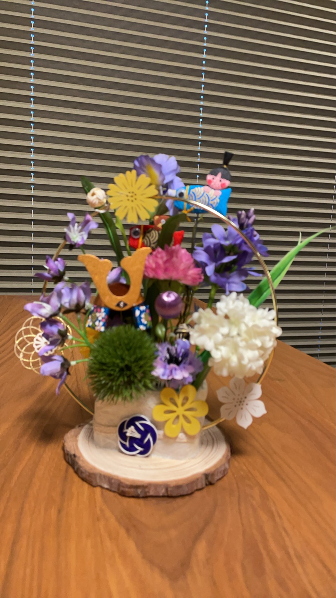

先日令和8年4月28日（火）、大宮ソニックシティ809会議室にて、浄土宗埼玉教区寺庭婦人会の令和8年度総会を開催いたしました。
当日は会員25名、来賓3名の計28名にご参加いただきました。総会は皆さまのご協力のもとスムーズに進行し、無事に議事を終えることができました。
総会後には、フラワーデザイナー・大澤祐美子先生を講師にお迎えし、フラワーワークショップを開催。先生の丁寧なご指導のもと、会場は終始和やかな雰囲気に包まれました。参加者それぞれが真剣に、そして楽しみながら作品づくりに取り組み、気づけば1時間があっという間に過ぎていました。
完成した作品はお持ち帰りいただけるものでした。帰り際、皆さんが大切そうに抱えてお持ち帰りになる姿がとても印象的でした。自分の手で作り上げた作品には、やはり特別な愛着が生まれるものですね。
ご参加くださいました皆さま、
誠にありがとうございました。
今後とも寺庭婦人会の活動への
ご理解とご協力をよろしくお願い申し上げます。
誠にありがとうございました。
今後とも寺庭婦人会の活動への
ご理解とご協力をよろしくお願い申し上げます。

